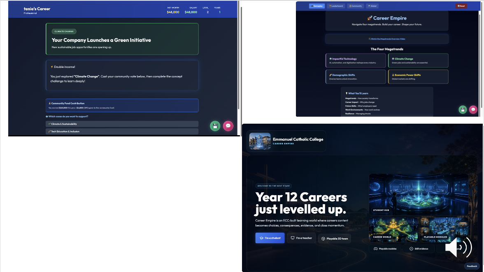

05 / 16
How it started From digitised worksheets to teaching through gamified learning.

Early Megatrends activities and the later Career Empire landing page 06 / 16
What a teacher could create Interactive activities Build a task students can try
Learning games Make decisions part of the activity
3D worlds Learn through experiences
07 / 16
Avatar Studio Identity, imagination, creativity, fun and play.
2D · Poses, movement and expressions Download the video 3D upgrade · Animation is much harder Clothing and movement have to work on a character viewed from different angles.
Download the video 09 / 16
Teacher dashboard · Capabilities Teacher dashboard screenshot to come.
10 / 16
Initiative on the first shift Total pedagogy shift
Notice A busy noodle bar. A colleague struggling.
Decide Where could you take initiative?
Practise Try a response in a simulated workplace.
11 / 16
Different routes to the same outcome Adjust the challenge More scaffolding or more complexity
Give students choices Read, watch, explore or experiment
Bring cases to life Explore a case in a 3D environment
12 / 16
Resources created by teachers Create Pool careers and curriculum expertise
Share Make resources available to schools
Adapt Improve resources for local contexts
13 / 16
Good ideas travel across postcodes 14 / 16
What would it take to sustain? Time and value Build time versus lessons delivered
Costs and upkeep Subscriptions, tokens, hosting and maintenance
School use Security, privacy, access and learning impact
15 / 16
Would you join a small pilot? 16 / 16
A culture that makes it possible